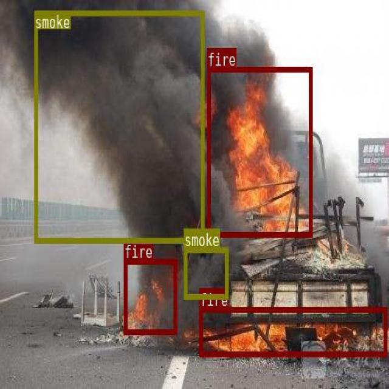
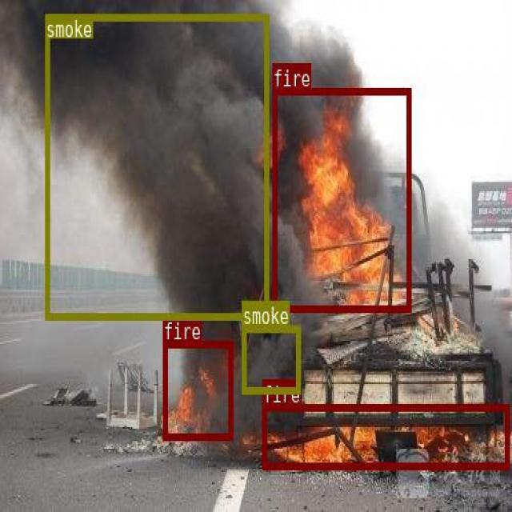

Vehicle Damage Detection


Our advanced computer vision algorithm accurately identifies and isolates damage areas,
providing detailed insights for precise assessment and repair.
Key benefits of our solution:
- Rapid and accurate damage detection
- Objective assessment, free from human error
- Detailed damage reports for insurance claims
- Streamlined repair process


 
